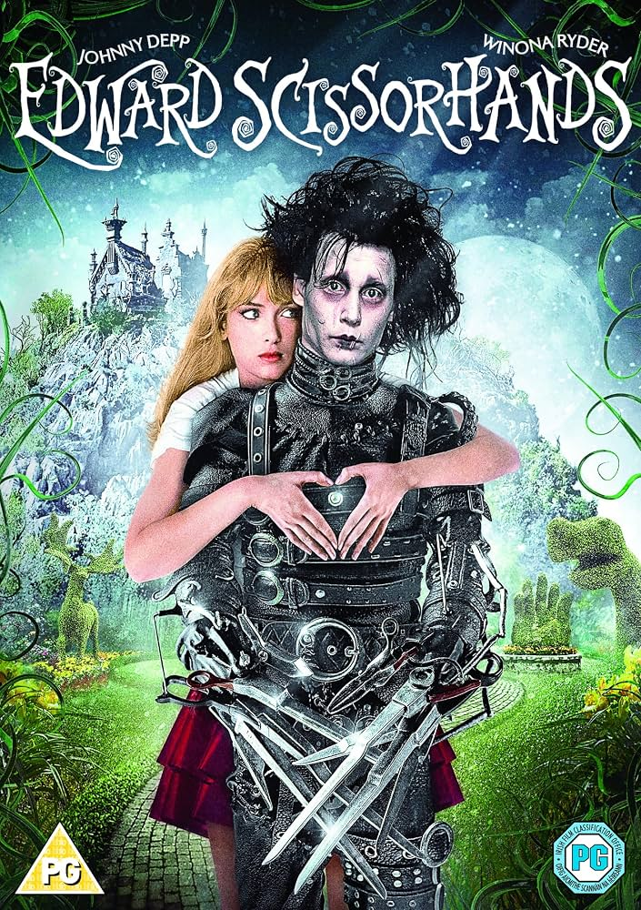
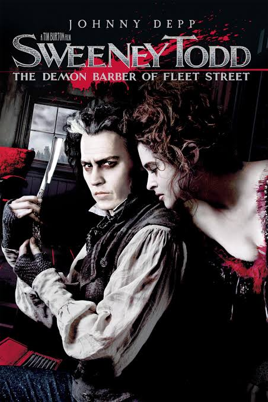
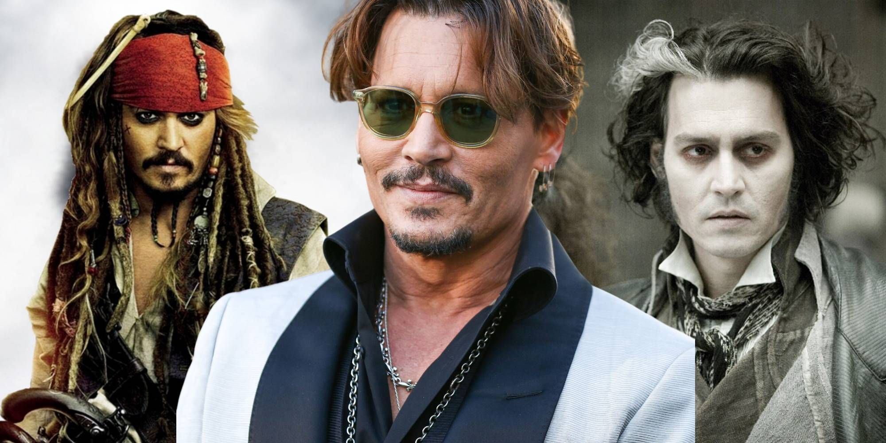

Edward Scissorhands (Edward aux mains d'argent)
1990 · Tim Burton
Un être artificiel doux et naïf doté de ciseaux à la place des mains, recueilli dans une banlieue américaine.
Qui est Jhonny Depp ? Découvre ses films et ses trophées.

Jhonny Depp, né le 9 juin 1963 à Owensboro (Kentucky), est un acteur et musicien américain. Révélé par la série 21 Jump Street (1987-1990), il se distingue ensuite par des rôles décalés, notamment grâce à sa collaboration avec Tim Burton, de Edward aux mains d'argent (1990) à Alice au pays des merveilles. Il devient une star mondiale avec Jack Sparrow dans Pirates des Caraïbes (2003), rôle qui lui vaut trois nominations à l'Oscar. Musicien, il est membre des Hollywood Vampires, et a joué Louis XV dans Jeanne du Barry (2023), film d'ouverture du Festival de Cannes.
Une sélection de ses rôles, du plus ancien au plus récent.

1990 · Tim Burton
Un être artificiel doux et naïf doté de ciseaux à la place des mains, recueilli dans une banlieue américaine.

1993 · Lasse Hallström
Un jeune homme qui sacrifie sa vie pour s'occuper de sa famille et de son petit frère handicapé (Leonardo DiCaprio).

1997 · Mike Newell
Un agent du FBI infiltré dans la mafia new-yorkaise qui se lie d'amitié avec un mafieux vieillissant (Al Pacino).

1999 · Tim Burton
Un inspecteur de police rationnel mais peureux envoyé enquêter sur une série de décapitations attribuées à un cavalier fantôme.

2003 · Gore Verbinski
Jack Sparrow est Un capitaine pirate rusé et excentrique qui cherche à récupérer son navire volé, le Black Pearl.

2005 · Tim Burton
Willy Wonka est un chocolatier excentrique et coupé du monde qui ouvre les portes de son usine magique à cinq enfants.

2007 · Tim Burton
Un barbier londonien revenu d'exil qui se venge des notables corrompus à coups de rasoir, dans une comédie musicale sombre.

2009 · Michael Mann
Le célèbre braqueur de banques américain des années 1930, traqué par le FBI après avoir été déclaré « ennemi public numéro un ».

2010 · Tim Burton
Le Chapelier fou, allié excentrique et imprévisible d'Alice qui l'aide à renverser la tyrannique Reine Rouge.
Les distinctions les plus connues.

Meilleur acteur dans une comédie musicale, pour Sweeney Todd.
2008
Meilleur acteur pour le rôle de Jack Sparrow dans Pirates des Caraïbes, un prix décerné par ses pairs.
2004
14 prix du public remportés au cours de sa carrière, un record pour un acteur.
2005 · 2017
3 nominations, sans victoire : Pirates des Caraïbes, Neverland et Sweeney Todd.
2004 · 2005 · 2008